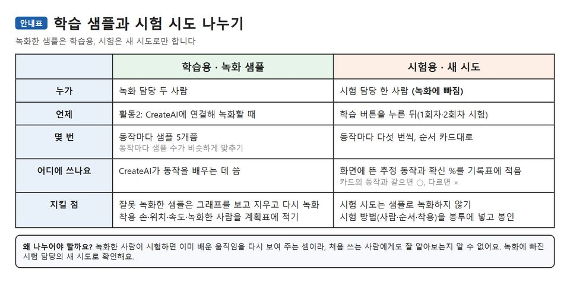
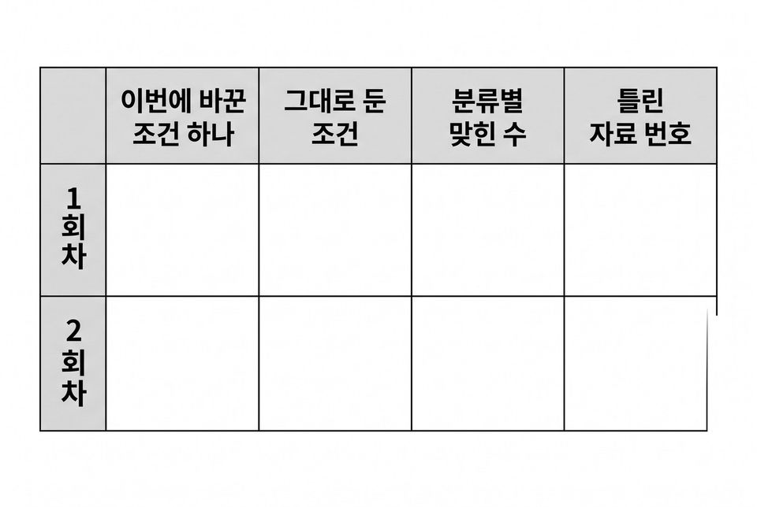
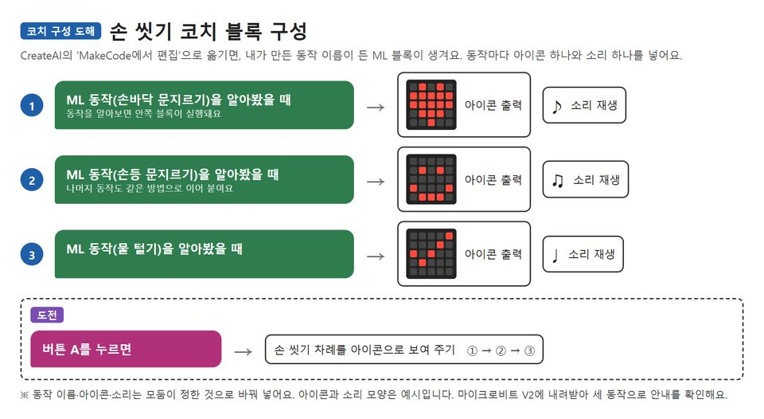

손목의 마이크로비트에 손 씻기 동작 세 가지를 학습시켜 샘플 3개와 8개의 결과를 견주고 손 씻기 코치 만들기
학습 문제 — 손 씻기 동작 세 가지를 학습시키고, 샘플 수를 늘려 같은 시험 방법으로 견주어 봅시다.
개요
| 성취기준 | [6실인공지능04-02] 인공지능 모델이 학습 데이터의 공통점으로 새 데이터를 분류하는 과정을 체험하고, 학습 데이터의 양이 분류 결과에 영향을 줌을 안다. 연계 성취기준: [6실05-04], [06자율-6] |
|---|---|
| 핵심 역량 | 지식정보처리 역량, 창의적 사고 역량 |
| 핵심 기능 | ① 데이터 간에 공통되는 유형이나 형태 탐색하기 ② 인공지능이 만들어지는 과정 탐색하기 ③ 학습 데이터와 시험 데이터 구분하기 ④ 샘플 수만 바꾸어 다시 학습시키고 결과 비교하기 ⑤ 동작 분류 결과에 따라 안내하는 코치 만들기 |
| 가치 태도 | 생활 속의 여러 가지 데이터가 갖는 의미를 파악하는 자세 결과가 오르지 않은 기록도 그대로 남기고 까닭을 따져 보려는 자세 |
교수학습 활동
21차시 도입 동기 유발 · 학습문제 제시21차시 전개 활동1. 동작 이름과 기준 정하기 · 활동2. 동작마다 샘플 3개씩 녹화하기22차시 전개 활동3. 학습 데이터와 시험 데이터 나누기22차시 전개 활동4. 샘플 3개로 첫 학습과 시험 기록하기23차시 전개 활동5. 헷갈림 판 보고 샘플 늘리기 계획 세우기23차시 전개 활동6. 샘플 8개로 다시 학습하고 견주기24차시 전개 활동7. MakeCode로 손 씻기 코치 만들어 써 보기24차시 정리 배운 내용 정리 · 다음 차시 예고
21차시도입8분
동기 유발
- 우리 팀 앞으로 온 보건실 의뢰서 읽기
- 의뢰 내용 알기: 손 씻기 동작을 알아보고 안내하는 ‘손 씻기 코치’ 만들기
- 교사 손목의 마이크로비트를 흔들며 x·y·z 그래프 보기
- 움직임이 숫자로 바뀌어 기록됨을 말하기
- 규칙으로 만든 야외 수업 판단 도우미와 달리 데이터로 가르칠 것 알기

학습문제 제시
- 손 씻기 동작 세 가지를 학습시키고, 샘플 수를 늘려 같은 시험 방법으로 견주어 봅시다.
준비물마이크로비트 V2(모둠당 손목용 1대·무선 연결용 1대), USB 케이블, 노트북(크롬·엣지)
자료보건실 의뢰서, 동작 데이터 계획표, 동작 이름 카드 3장
유의점물 없이 책상 앞에서 동작을 해 보이게 한다.
유의점사전 준비: 모든 기기에 프로그램을 미리 넣어 두고 기기 번호표·배터리·연결 시험을 점검한다.
유의점마이크로비트가 부족한 학교는 엔트리 이미지 분류(웹캠)로 손 모양 사진을 같은 절차로 학습시킨다.
유의점기기 배부와 USB 연결 확인 시간을 도입 시간에 포함한다.
21차시전개32분
활동1. 동작 이름과 기준 정하기 (10분)
- 손 씻을 때 하는 동작 가운데 뚜렷이 다른 세 가지 고르기
- 예: 손바닥 문지르기, 손등 문지르기, 물 털기
- 동작마다 손 방향·움직이는 방향·빠르기를 기준으로 적기
- 옆 모둠과 이름을 견주어 헷갈리는 이름은 다시 정하기
- 교사가 준비한 손목 밴드에 마이크로비트를 끼우고 방향 표시하기
활동2. 동작마다 샘플 3개씩 녹화하기 (22분)
- 녹화 담당 두 명과 녹화에 빠지는 시험 담당 한 명 정하기
- 착용 손·위치·속도·녹화한 사람을 계획표에 먼저 적기
- USB에 꽂은 무선 연결용 마이크로비트로 손목 기기와 CreateAI 잇기
- 동작 이름 세 개를 만들고 동작마다 샘플 3개만 녹화하기
- 그래프를 보고 잘못 녹화한 샘플은 지우고 다시 녹화하기
- 뒤에서 8개로 늘려 견주므로 녹화 조건을 그대로 적어 두기
준비물배터리 팩, 손목 밴드(교사 준비)
자료모둠별 녹화 차례표, CreateAI 연결 순서 도움 카드
유의점무선 연결용 마이크로비트(라디오 연결)를 기본으로 쓰고, 안 되면 교사 시연 기기로 함께 녹화한다.
유의점세게 흔드는 동작은 밴드를 단단히 조여 기기를 떨어뜨리지 않게 한다.
유의점CreateAI는 동작마다 샘플이 3개 이상 있어야 학습하므로 1회차는 3개로 맞춘다.
유의점밴드 꾸미기는 창체 시간 등의 선택 활동으로 둔다.
유의점느린 학습자는 연결 순서 도움 카드를 쓰고, 빠른 학습자는 세 동작 그래프의 다른 점을 적는다.
22차시전개22분
활동3. 학습 데이터와 시험 데이터 나누기 (22분)
- 샘플 그래프의 x·y·z 값이 모델이 보는 특징임을 알고 닮은 모양 찾기
- 녹화 샘플은 학습 데이터, 시험 담당의 새 시도는 시험 데이터로 나누기
- 녹화한 사람이 시험하면 안 되는 까닭 모둠에서 말하기
- 교사가 준 시험 순서 카드(동작마다 다섯 번)를 봉투에 넣고 봉인하기
- 기록지의 학습 수·시험 수·맞힌 수 칸 확인하기
- 다른 동작과 헷갈릴 만한 샘플을 골라 계획표에 표시하기

자료동작 데이터 계획표, 시험 순서 카드(교사 제공), 시험 방법 봉투, 분류 시험 기록지
유의점시험 담당의 시도는 샘플로 녹화하지 않고 뒤 차시에서도 같은 방법으로 쓴다.
유의점두 명 모둠은 옆 모둠 친구 한 명을 시험 담당으로 빌려 온다.
유의점순서 카드는 교사가 동작이 섞이게 미리 만들어 모든 모둠이 같은 카드를 쓴다.
22차시전개18분
활동4. 샘플 3개로 첫 학습과 시험 기록하기 (18분)
- CreateAI에서 학습 버튼을 눌러 모델 학습시키기
- 시험 담당이 밴드를 차고 순서 카드대로 동작하기
- 화면에 뜬 추정 동작과 확신 %를 시도마다 기록지에 적기
- 카드의 동작과 같으면 동그라미, 다르면 가위표로 적기
- 동작마다 정확도(맞힌 수 ÷ 시도 수)를 ‘샘플 3개’ 칸에 적기
- 프로젝트를 저장하고 녹화 조건을 다시 확인하기
자료분류 시험 기록지, 시험 순서 카드
유의점확신 %는 맞힌 수와 섞지 않고 다른 칸에 따로 적게 한다.
유의점연결이 끊긴 시도는 다시 연결한 뒤 새로 하고 끊긴 사실을 비고에 적는다.
유의점기기가 되지 않는 모둠은 교사 시연 기기 화면으로 함께 보되 기록지는 각자 남긴다.
23차시전개20분
활동5. 헷갈림 판 보고 샘플 늘리기 계획 세우기 (20분)
- 1회차에서 틀린 시도를 모아 동작별로 세기
- 어떤 동작을 무엇으로 알아봤는지 헷갈림 판에 붙이기
- 틀린 시도와 샘플 그래프를 견주어 빠르기·방향 차이 찾기
- 모든 모둠이 바꿀 조건은 샘플 수 하나(3개 → 8개)임을 확인하기
- 그대로 둘 조건(착용 손·위치·속도·녹화한 사람·시험 방법) 적기
- 8개로 늘리면 결과가 어떻게 될지 예상 한 줄 쓰기
자료분류 시험 기록지, 헷갈림 판, 1회차에서 틀린 시도 목록
유의점헷갈림 판은 혼동 행렬을 초등학생 눈높이로 바꾼 것으로, 어떤 동작을 무엇으로 알아봤는지 보여 준다.
유의점샘플 수와 다른 조건을 한꺼번에 바꾸지 않게 한다.
유의점샘플을 늘리면 반드시 더 잘 알아본다고 미리 정해 두지 않게 한다.
유의점동작을 되풀이할 때는 책상 모서리와 친구에게서 거리를 두어 기기를 떨어뜨리지 않게 한다.
23차시전개20분
활동6. 샘플 8개로 다시 학습하고 견주기 (20분)
- 같은 녹화 조건으로 동작마다 샘플 5개를 더해 8개 만들기
- 그대로 둔 조건이 정말 그대로인지 계획표에서 확인하기
- 다시 학습시키고 프로젝트를 새 이름으로 저장하기
- 봉인한 시험 방법 그대로 시험 담당이 2회차 시험하기
- ‘샘플 3개’와 ‘샘플 8개’ 칸의 맞힌 수를 나란히 적기
- 모둠 결과를 칠판 표에 모아 반 전체 흐름 살피기
- 선택: 착용 손이나 속도 하나만 바꾼 샘플로 3회차 견주기

자료분류 시험 기록지, 조건 비교표, 칠판 결과 모음표
유의점시험 담당·순서 카드·착용 방법을 바꾸지 않아야 1회차와 견줄 수 있음을 짚는다.
유의점맞힌 수가 오르지 않은 결과도 그대로 적게 하고 낮은 성취로 보지 않는다.
유의점같은 샘플로 다시 학습해도 결과가 조금 달라질 수 있음을 미리 알린다.
유의점선택 조건 비교는 샘플 수 비교를 마친 모둠만 한다.
24차시전개33분
활동7. MakeCode로 손 씻기 코치 만들어 써 보기 (33분)
- CreateAI의 ‘MakeCode에서 편집’으로 모델 옮기기
- 뼈대 코드에서 내 동작 이름이 든 ML 블록 확인하기
- [ML 동작(손바닥 문지르기)을 알아봤을 때] 블록에 아이콘·소리 넣기
- 나머지 두 동작도 같은 방법으로 이어 붙이기
- 마이크로비트 V2에 내려받고 세 동작으로 안내 확인하기

- 다른 모둠 친구가 코치를 차고 써 보며 한 동작과 안내 적기
- 다르게 안내한 동작과 그때 착용 손·빠르기 적어 두기
- 써 본 친구의 불편한 점과 별 스티커 소감 받기
- 도전: 버튼 A를 누르면 손 씻기 차례를 아이콘으로 보여 주기
준비물마이크로비트 V2, 배터리 팩, 손목 밴드, 별 스티커
자료코치 구성 활동지, 사용 기록표, 뼈대 코드(동작 하나 완성)
유의점수업 전에 MakeCode ML 블록 이름을 확인하고, 모델을 기기 안에서 돌리려면 V2가 필요함을 알린다.
유의점동작 분류 결과만으로 손을 깨끗이 씻었는지 알 수 없고, 확신 %는 맞았다는 뜻이 아님을 짚는다.
유의점배터리 팩 전선이 밴드에 끼지 않게 하고 써 보는 중에 기기를 떨어뜨리지 않게 한다.
유의점느린 학습자는 뼈대 코드를 쓰고, 빠른 학습자는 차례 안내 도전을 한다.
유의점기기 고장이나 내려받기 실패를 개념 이해 부족으로 평가하지 않는다.
24차시정리7분
배운 내용 정리 (5분)
- 보건실 결과 보고 카드에 샘플 3개·8개의 맞힌 수 옮겨 적기
- 학습 데이터와 시험 데이터를 나누어 쓴 까닭 쓰기
- 샘플 수만 바꾸고 나머지를 그대로 둔 까닭 말하기
다음 차시 예고 (2분)
- 사용자 의견을 반영해 코치 2.0을 만드는 다음 활동 알기
- 프로젝트와 기록지를 저장하고 기기·밴드 정리하기
자료사용 기록표, 결과 보고 카드
유의점쓰기가 어려운 학생은 구술로 확인하고 지원한 사실을 적는다.
유의점모둠 코치의 작동 결과로 개인 성취를 대신 판단하지 않고 각자의 기록지로 확인한다.
유의점결석이나 미제출로 확인하지 못한 학생은 보충 확인 시점을 정한다.
평가 계획
인공지능 소양 · 학습 데이터의 양과 분류 결과의 관계 해석
학습 데이터와 시험 데이터를 나누어 마이크로비트 동작 모델을 만들고, 샘플 수만 늘린 두 회차의 결과를 같은 시험 방법으로 기록해 그 까닭을 설명할 수 있는가?
| 수준 | 평가 기준 |
|---|---|
| 매우 잘함 | 동작 이름과 기준, 녹화 조건을 정해 샘플을 모으고, 녹화하지 않은 시험 담당의 새 시도로만 시험한다. 샘플 3개와 8개 두 회차를 같은 시험 방법으로 기록하고, 동작마다 맞힌 수의 변화를 확신 %와 구분해 들어 샘플 수와 이어 설명하며, 오르지 않은 동작은 헷갈린 동작의 그래프 모양 같은 다른 까닭까지 찾는다. 동작마다 다르게 안내하는 손 씻기 코치를 완성하고 써 본 친구의 사용 기록을 남긴다. |
| 잘함 | 학습 데이터와 시험 데이터를 나누어 모델을 만들고, 샘플 3개와 8개 두 회차의 맞힌 수를 기록해 샘플 수와 결과의 관계를 자기 기록지를 근거로 설명한다. 동작 분류 결과에 따라 안내하는 코치를 만든다. |
| 보통 | 두 회차 결과를 기록하지만 일부 칸이 빠졌거나 확신 %를 맞힌 수와 섞어 적는다. 또는 샘플 수와 결과의 관계를 기록한 숫자 없이 ‘많으면 좋다’로만 말하거나, 코치가 일부 동작에서만 안내한다. |
| 노력요함 | 교사가 절차를 함께 짚어 주고 기록 칸을 지정해 준 뒤에도 학습 데이터와 시험 데이터를 구분해 쓰거나 회차별 결과를 기록하는 데 어려움이 있다. |
| 미관찰 | 결석이나 미제출로 확인하지 못한 경우. 낮은 성취로 적지 않고 따로 기록한 뒤 보충 확인 시점을 정한다. |
평가 방법 산출물 분석(헷갈림 판·시험 기록표) · 활동지 분석 · 작품 실행 확인 · 구술 확인 · 관찰
연동 도구·링크
과정안에 나오는 도구가 저절로 걸립니다. 수업 전에 학교망에서 열리는지, 블록·메뉴 이름이 바뀌지 않았는지 확인하세요.
MakeCode (micro:bit) ↗마이크로비트 블록 코딩·시뮬레이터·무선(라디오)계정: 필요 없음라디오 블록 설명 ↗MakeCode (micro:bit) 안내마이크로비트 V2 ↗LED·버튼·가속도·소리 센서, 무선 통신계정: 필요 없음micro:bit CreateAI ↗움직임 데이터로 동작 모델 학습·시험, 움직임 그래프계정: 필요 없음(크롬·엣지)CreateAI 사용 안내 ↗micro:bit CreateAI 안내엔트리 ↗블록 코딩, 인공지능 블록, 데이터 분석(테이블·차트)계정: 학생 계정 없이 만들기 화면 사용 가능(저장은 교사 계정)엔트리 사용 설명서 ↗엔트리 안내엔트리 이미지 분류 모델 ↗웹캠·사진으로 분류 모델 학습계정: 엔트리와 같음CreateAI 사용 안내 ↗무선 연결용 마이크로비트 준비
내 수업 링크
학급 패들렛, 엔트리 작품, 활동지 주소처럼 이 차시에 쓸 링크를 걸어 둡니다. 이 브라우저에만 저장되고 밖으로 보내지 않습니다. 학생 이름이 든 주소는 넣지 마세요.